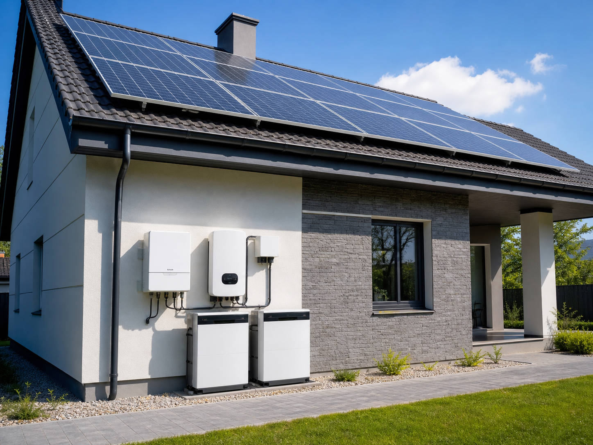

Кошик METON
Додайте обладнання й надішліть заявку менеджеру
Кошик працює без реєстрації. Ви можете зібрати станцію, панелі, інвертор, акумулятори або кріплення, а потім відправити список на консультацію.

Ваш кошик
Оформлення замовлення